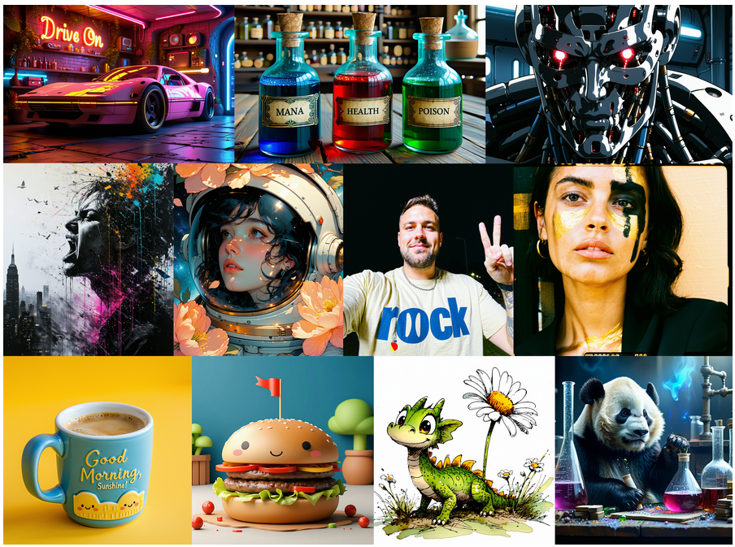
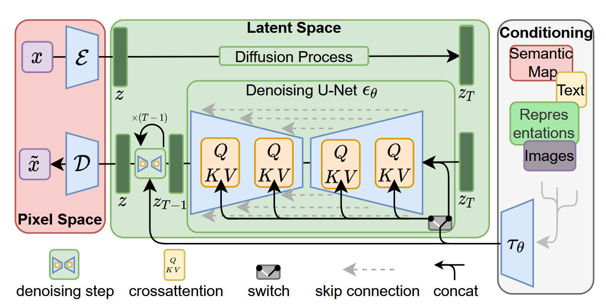
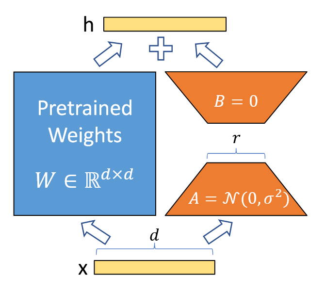
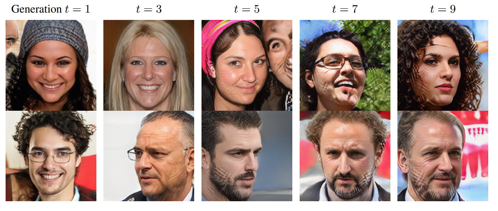
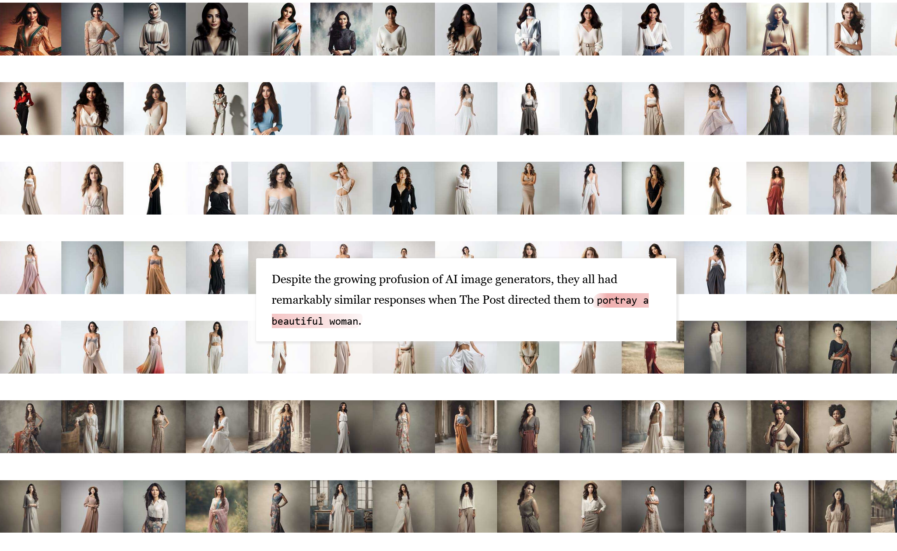

10 - GenAI Practical
After this lecture you should be able to:
- Explain the core mechanisms of major generative model families: autoregressive, diffusion, GANs, and VAEs
- Compare tradeoffs between these approaches (sampling speed, quality, coverage, likelihood computation)
- Understand how conditional generation extends models to accept additional inputs (text, images, class labels)
- Utilize pre-trained models (Stable Diffusion) and efficient fine-tuning techniques (LoRA) for practical applications
Four major generative model families make different tradeoffs: Autoregressive (exact likelihood, slow sequential sampling), Diffusion (SOTA quality, iterative denoising), GANs (fast generation, adversarial training, mode collapse risk), VAEs (structured latent space, approximate likelihood). Conditional generation extends models to accept text, images, or labels as input. Stable Diffusion runs diffusion in VAE latent space for efficiency, enabling practical high-resolution generation. LoRA fine-tuning adapts pre-trained models with minimal compute. Societal considerations include synthetic data pollution, authenticity challenges, and embedded biases.
1 Pre-Trained Models
Training generative models from scratch requires massive datasets (millions of images), significant compute resources (weeks on multiple GPUs), and careful hyperparameter tuning. For most practical applications, pre-trained models provide a much more accessible starting point.
The landscape has been transformed by models like Stable Diffusion, which bring state-of-the-art generation capabilities to consumer hardware. These models are trained on billions of image-text pairs and can generate high-quality, diverse images from text prompts—with minimal customization required for many use cases.
Pros
- High-quality image generation out-of-the-box
- Generate images via natural language prompts
- Easy to customize or fine-tune with minimal investment (LoRA, DreamBooth)
- Active community sharing models, techniques, and improvements
Cons
- Not suitable if your data is from a highly specific domain (e.g., medical imaging, satellite imagery)
- May not work well for very specific output constraints (e.g., exact branding requirements)
- Biases from training data may propagate to outputs
- Licensing considerations for commercial use
1.1 Stable Diffusion: Practical State-of-the-Art
Stable Diffusion (Rombach et al. 2022) is an open-source text-to-image model that has become the de facto standard for accessible, high-quality image generation. See Figure 1 for some examples.

Unlike pure pixel-space diffusion (which is computationally expensive), Stable Diffusion uses latent diffusion—running the diffusion process in a compressed latent space.

1.2 Why Latent Diffusion?
Running diffusion directly on high-resolution images (e.g., 512×512×3) is computationally expensive—the U-Net must process millions of values at each denoising step. Latent Diffusion solves this by:
- Pre-training a VAE to compress images into a lower-dimensional latent space (e.g., 64×64×4)
- Running diffusion in the latent space (much faster!)
- Decoding the final latent representation back to pixel space
This provides an 8× reduction in memory and computation, making high-resolution generation practical on consumer GPUs.
1.3 Conditioning on Text (and More)
Stable Diffusion supports text-conditional generation via cross-attention to CLIP text embeddings. The U-Net attends to text features at multiple scales, enabling precise control over generated content. Beyond text, the framework supports conditioning on:
- Images: For inpainting, outpainting, and image-to-image translation
- Depth maps: For 3D-aware generation
- Segmentation masks: For spatial control
- Style embeddings: For artistic control

1.4 Fine-Tuning with LoRA
While pre-trained models are powerful, you often want to adapt them to specific styles, subjects, or domains. Traditional fine-tuning updates all model parameters (billions of weights!), requiring massive memory and compute. LoRA (Low-Rank Adaptation), see Figure 4, offers a far more efficient alternative.
Key idea: Instead of updating the full weight matrix \(W\), LoRA learns a low-rank update \(\Delta W = BA\) where:
- \(B \in \mathbb{R}^{d \times r}\) and \(A \in \mathbb{R}^{r \times k}\)
- \(r \ll \min(d, k)\) (typically \(r = 4\) to \(16\))
- Only \(A\) and \(B\) are trained; original weights \(W\) remain frozen
This reduces trainable parameters by 1000× or more, enabling fine-tuning on a single consumer GPU in hours rather than days. LoRA adapters can be easily shared, combined, and switched, creating a thriving ecosystem of specialized models.
Popular use cases:
- Style transfer: Train on artworks to mimic specific artistic styles
- Subject learning: DreamBooth + LoRA to generate images of specific people/objects
- Domain adaptation: Adapt to specialized domains (anime, architecture, product photography)

1.5 Hardware Requirements
The computational demands vary significantly between inference and training:
1.5.1 Inference (Image Generation)
- Minimum: 4-6 GB VRAM (GPU)
- Stable Diffusion 1.5 at 512×512 resolution
- Longer generation times, limited batch sizes
- Recommended: 8-12 GB VRAM
- Stable Diffusion XL at 1024×1024
- Comfortable batch sizes, faster generation
- High-end: 16+ GB VRAM
- Multiple models loaded simultaneously
- Video generation, 3D-aware models
CPU-only inference is possible but extremely slow (minutes per image vs. seconds). Many optimization techniques exist: quantization, attention slicing, model offloading.
1.5.2 Fine-Tuning (LoRA)
- Minimum: 12-16 GB VRAM
- LoRA fine-tuning with small batch sizes
- Gradient checkpointing, mixed precision required
- Recommended: 24 GB VRAM
- Comfortable batch sizes for faster convergence
- Multiple LoRA ranks simultaneously
1.5.3 Full Training (From Scratch)
- Minimum: Multiple A100 GPUs (40-80 GB each)
- Typical: Clusters with 100+ GPUs
- Duration: Days to weeks
- Cost: $10,000s to $100,000s
For most researchers and practitioners, pre-trained models + LoRA fine-tuning offer the best trade-off.
1.6 Open-Source Ecosystem
The open-source community has created a rich ecosystem of tools, models, and resources:
1.6.1 HuggingFace
HuggingFace is the central hub for open-source generative models:
Diffusers library: Unified Python API for diffusion models with extensive documentation
from diffusers import StableDiffusionPipeline pipe = StableDiffusionPipeline.from_pretrained("stabilityai/stable-diffusion-2-1") image = pipe("A photo of a cat wearing sunglasses").images[0]Model Hub: 100,000+ models including base models, fine-tunes, and LoRA adapters
Spaces: Interactive demos for trying models before downloading
Documentation: Comprehensive guides for inference, fine-tuning, and training
Best for: Programmatic access, research, production deployments, custom workflows
1.6.2 CivitAI
CivitAI is a community-driven platform specializing in Stable Diffusion models:
- Extensive model library: Thousands of community-created models, LoRAs, and embeddings
- Style-focused: Strong emphasis on artistic styles, anime, photorealism
- Preview images: See example outputs before downloading
- Version control: Track model updates and improvements
Best for: Exploring diverse styles, finding specialized models, community engagement
1.6.3 Automatic1111 WebUI
Automatic1111 provides a feature-rich web interface for local generation:
- Local execution: Run models on your own hardware with full control
- Advanced features: Inpainting, img2img, ControlNet, depth guidance
- Extensions ecosystem: Hundreds of community plugins
- Batch processing: Generate and iterate efficiently
Best for: Interactive experimentation, full control over generation, no API costs
1.7 Closed-Source Platforms
Commercial platforms offer convenient APIs and frontier models:
1.7.1 OpenAI
- Latest model: 4o Image with enhanced prompt following and coherence
- API access: Programmatic generation, inpainting, variations
- Pricing: Pay per image generated
- Strengths: Strong text understanding, safe outputs, reliable API
1.7.2 Google Gemini (Imagen)
- High photorealism: Particularly strong at realistic images
- Multimodal: Integration with Gemini’s broader capabilities
- Controlled access: Available through Google Cloud
- Strengths: Photo-quality outputs, factual accuracy
1.7.3 Replicate
- Hybrid platform: Both open- and closed-source models via unified API
- Pay-per-use: No infrastructure management, pay only for inference
- Host custom models: Deploy your own fine-tuned models
- Wide selection: SDXL, Midjourney alternatives, domain-specific models
1.7.4 Midjourney
- Artistic focus: Highly curated, aesthetic, and stylized outputs
- Discord interface: Community-driven prompt engineering
- No API: Interface only, no programmatic access
- Strengths: Artistic coherence, aesthetic quality, strong defaults
Choosing a platform:
- For prototyping: HuggingFace Spaces or Replicate (fast, no setup)
- For production: HuggingFace Diffusers or OpenAI API (reliable, scalable)
- For experimentation: Automatic1111 (full control, no API costs)
- For art/design: Midjourney or CivitAI models (aesthetic quality)
2 Conclusions & Discussions
An interesting thought: What happens if models are trained (inadvertedly) on synhetic data? Alemohammad et al. (2023) studies this and found remarkable degradation, see Figure 5.

Furthermore, synthetic imagery has obvious consequences on all of us. The lines between real and synthetic are starting to blur and it becomes increasingly difficult to distinguish both. See the following quote with respect to Figure 6.
Zunächst hatte die Polizei … die Aktion habe nicht stattgefunden, das Bild davon sei ein »Fake«. … Auf Anfrage des SPIEGEL sagte ein Sprecher der Brandenburger Polizei: »Ob die Projektion tatsächlich so ablief, ist Teil dieser Ermittlungen. Derzeit können wir es jedenfalls nicht ausschließen.«
Furthermore, biases from the internet-scale data the models have been trained on seep into the models. An interesting article by the Washington post Link investigated this Figure 7.

They found strong biases, for example, with respect to the depiction of beautiful women, see Figure 8.
